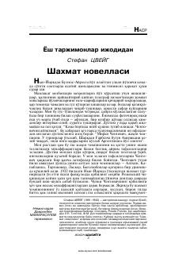

SNInson ruhiyati va shaxmat o'yinining cheksiz imkoniyatlari haqidagi ta'sirli asar.
Stefan Sveyg qalamiga mansub ushbu asar inson aqliy-tasavvuriy imkoniyatlarining cheksizligi, asablar kuchli zo'riqishga tushganda mo'jizaviy ruhiy quvvatlarning namoyon bo'lishini tahlil qiladi. Shuningdek, fashistlarning insonni ruhan sindirish uchun amalga oshirgan qabih qilmishlari fosh etiladi.